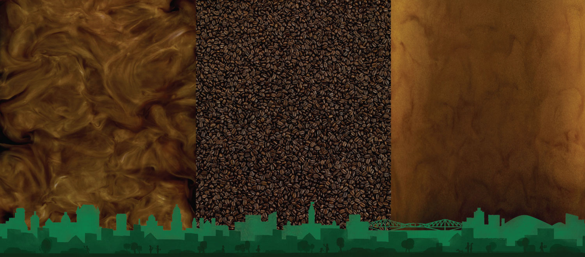
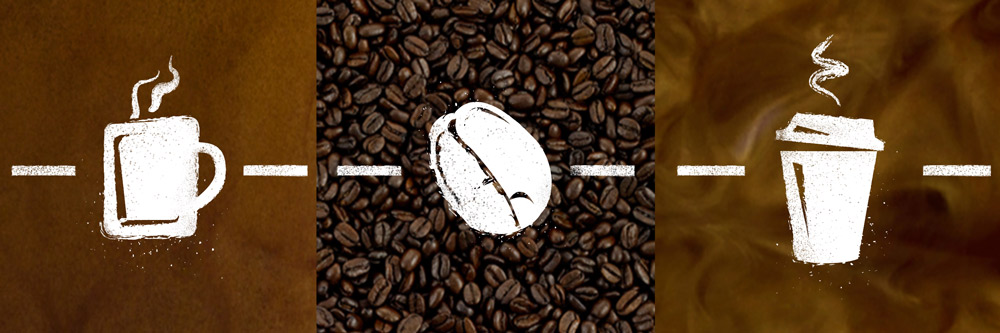
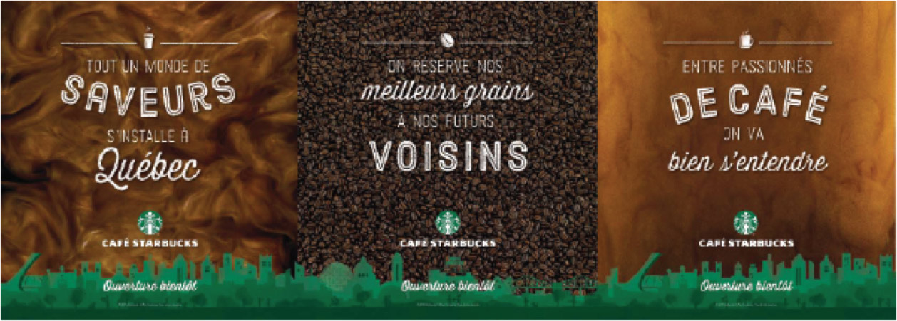
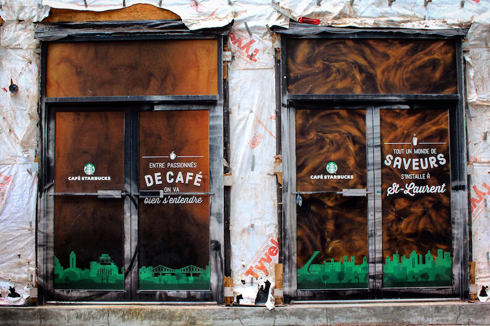
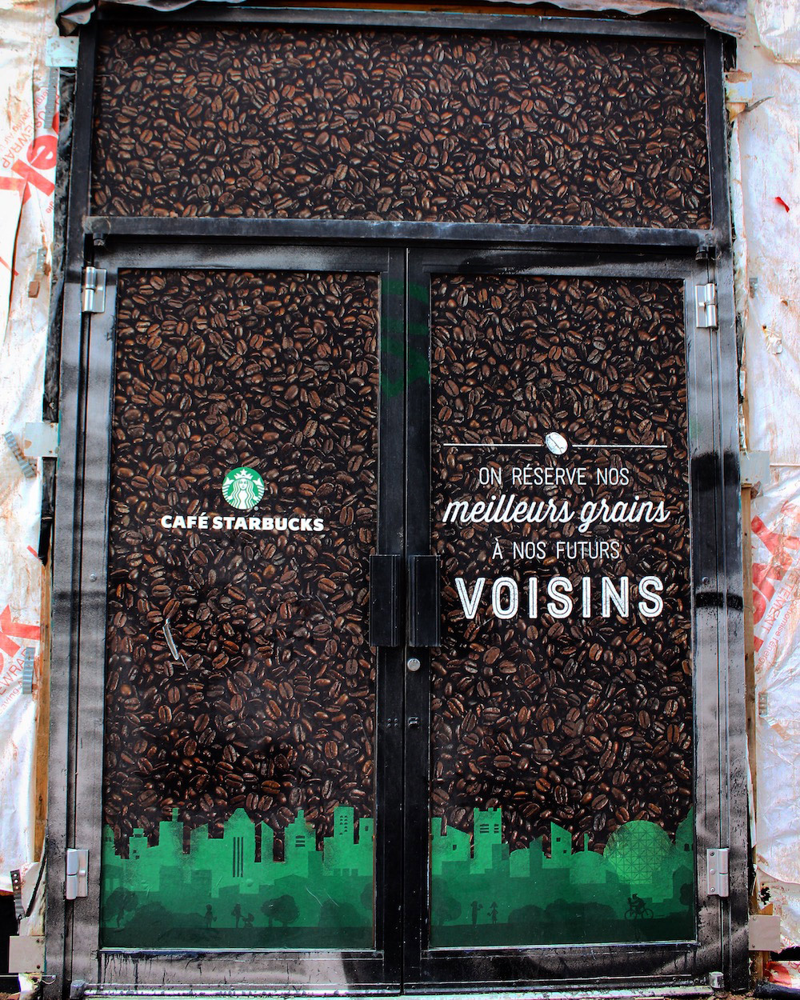
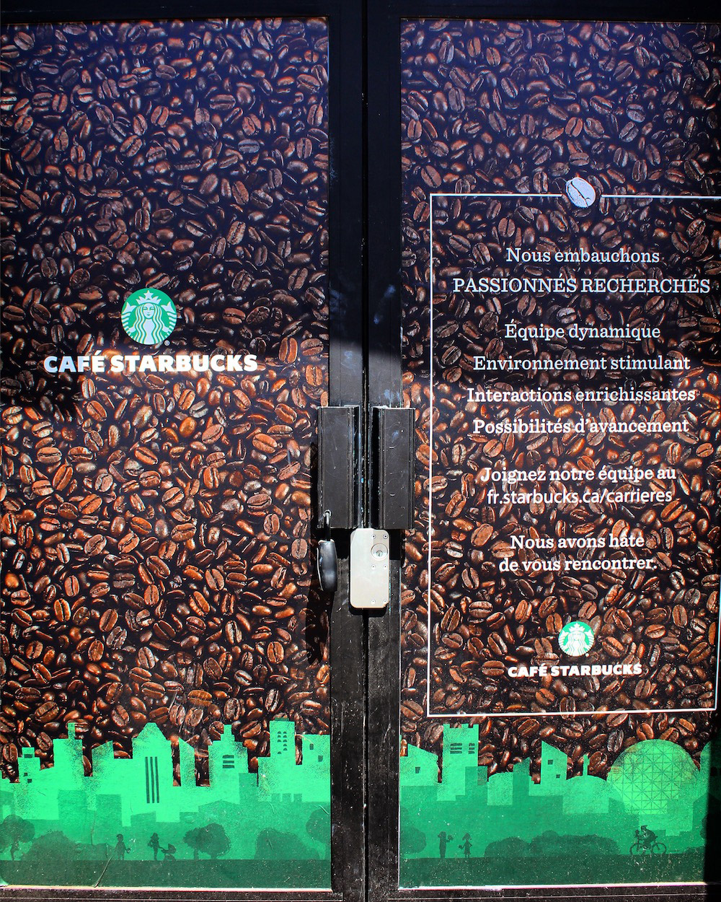
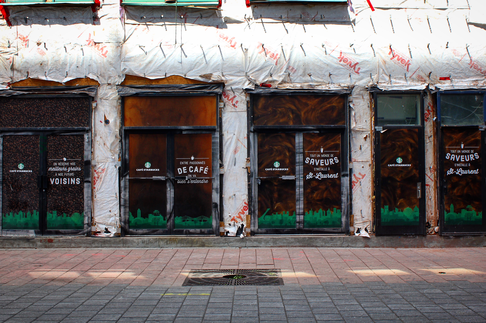
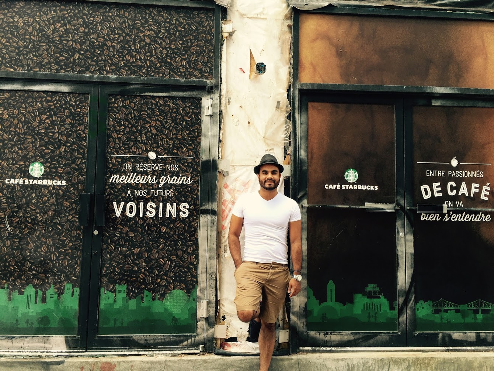
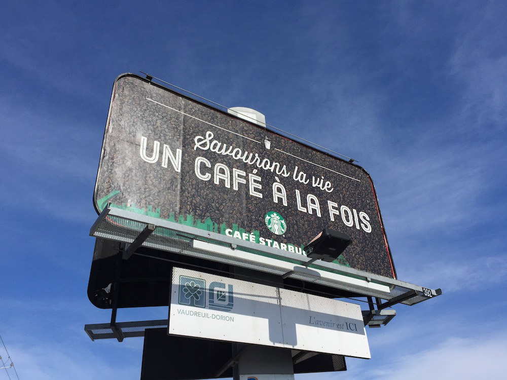

Starbucks Cityscapes
Starbucks was looking for elegant and locally relevant visuals which would be used as marketing materials for all the opening stores in Quebec, specifically in Montreal, Quebec City and several other towns within the province.
The three Cityscapes
The three cityscapes were created with a handcrafted paintbrush look, with layers of green derived from the Starbucks color palette and with whimsical characters interacting with coffee made by Starbucks.
Scroll
Layered design
The cityscapes were then superimposed onto photographs of three different forms of coffee: latte, coffee bean and espresso. This created the underlying design of the marketing text.
Additionally, I created 3 custom icons of a mug, a coffee bean and a cup to be used with the text.
The final artwork will include the coffee pattern photography, the cityscape illustrations, the icons, text written in a combination of two fonts dressed in white and the company logo.
On the streets
Photography of several installations with the Starbucks Opening Stores artwork in the Montreal area.
     Art direction by BBDO
Starbucks illustrators and designers communicate its brand through art. Artwork needs to be created based on Starbucks' visual principles: artful, elevated, layered, handcrafted, whimsical, experiential and derived from culture.
We worked with BBDO very closely to produce the perfect visual balance for these pieces of art which would be used as a marketing vehicle for new stores being setup in cities within the Quebec province.